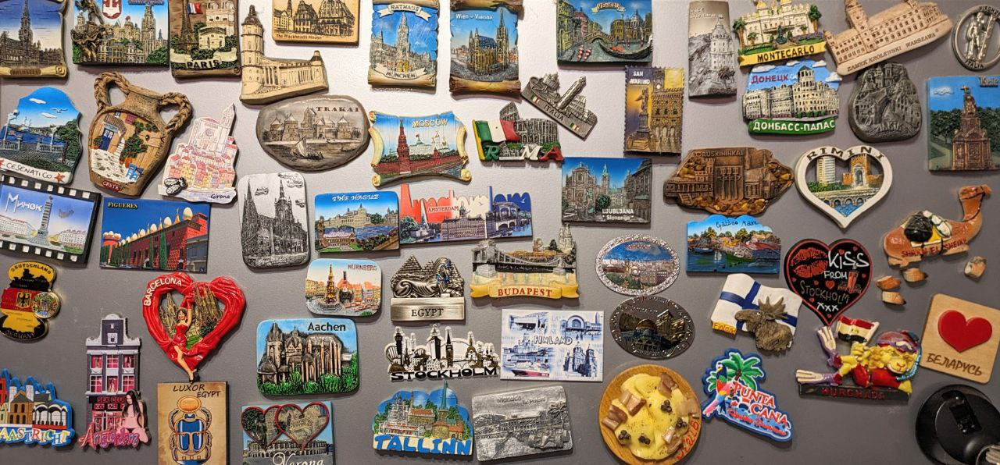

Путешествия
Я очень люблю путешествовать. Путешествия для меня являются одним из способов познания себя. Наблюдения за образом жизни людей в других странах, их темпераментом, общением друг с другом и отношению к различным ситуациям дают много поводов для размышлений о себе, о своих желаниях, новых целях и стремлениях. Совсем не пугают ранние подъемы, переезды и перелеты. Я заряжаюсь энергией от длительных прогулок по улицам незнакомых городов других стран. Заходить в местные кафешки и пробовать различные блюда, это так здорово.
Моя коллекция магнитов:
